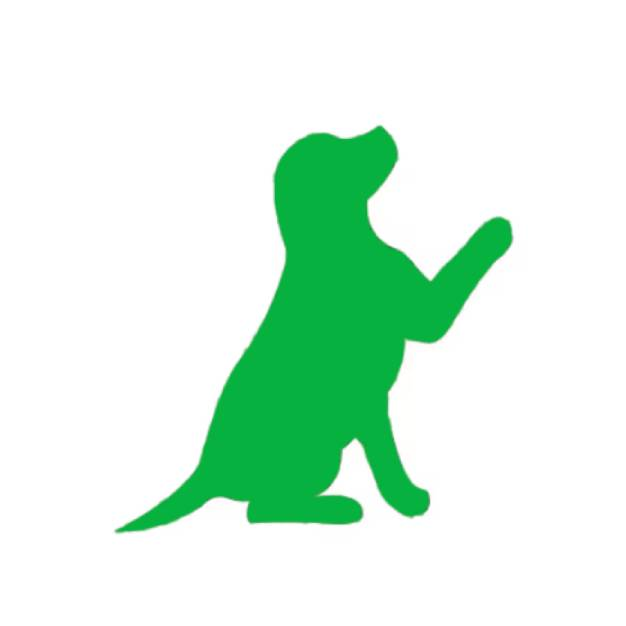

<body class="cuerpo">
  <div class="nav">
    <div class="nav-header">
      
      <div class="nav-title">PetMatch</div>

    </div>
    <div class="nav-btn">
      <label for="nav-check">
        <span></span>
        <span></span>
        <span></span>
      </label>
    </div>
    <input type="checkbox" id="nav-check">
    <div class="nav-links">
      <a *ngIf="!logeado" routerLink="/registro">Registrarse</a>
      <a *ngIf="!logeado" routerLink="/login">Iniciar sesión</a>
      <a *ngIf="logeado" (click)="cerrarSesion()">Cerrar sesión</a>
      <a *ngIf="logeado" routerLink="/chat"><span class="material-icons">chat</span></a>
      <a *ngIf="logeado"></a>
    </div>
    
  </div>
  
  <div class="opcionesMenu">
    <div class="opcionMenu">
      <div class="contenedorImagen">
        <a routerLink="/adopcion">
          
        </a>
      </div>
      <p class="titulOpcion">Adoptá</p>
      <p class="descripcionOpcion">Encontrá tu mascota ideal</p>
    </div>
    <div class="opcionMenu">
      <div class="contenedorImagen">
        <a routerLink="/extravio">
          
        </a>
      </div>
      <p class="titulOpcion">Ayudá</p>
      <p class="descripcionOpcion">Buscá mascotas perdidas cerca tuyo</p>
    </div>
  </div>
</body>